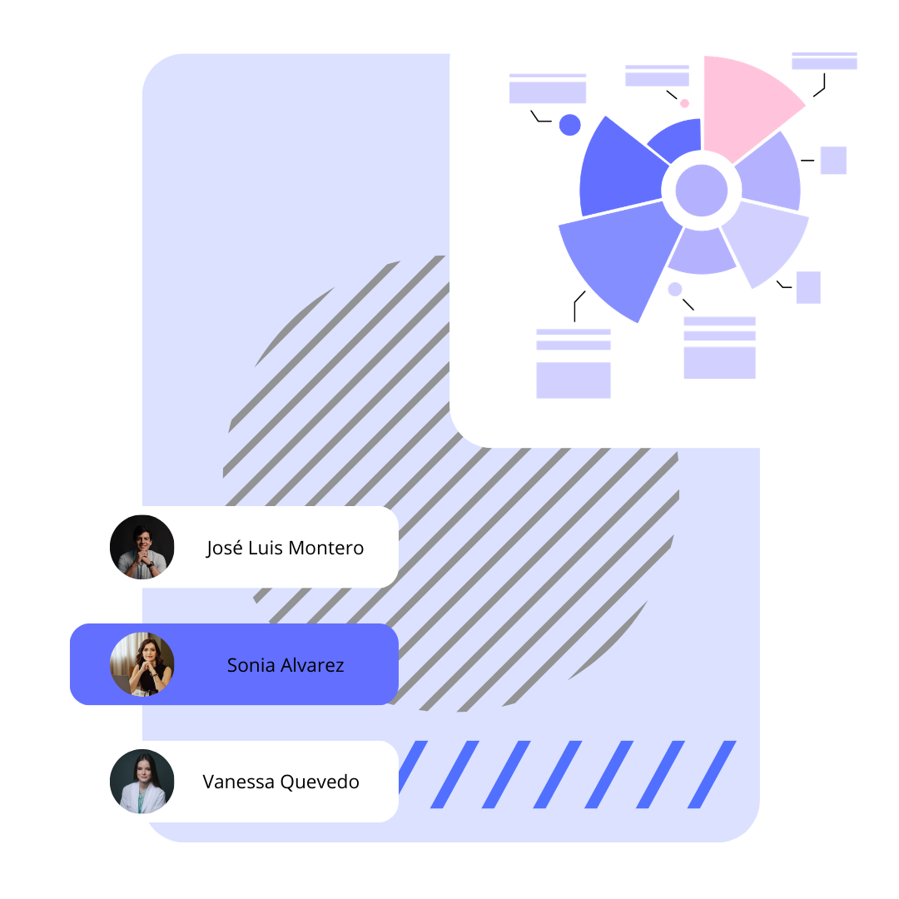

Ayudo a negocios locales a crear campañas rentables en Instagram y Facebook basadas en métricas reales de negocio, no en datos de vanidad.Genera conversaciones reales con clientes interesados. Hablemos
Muchos pequeños negocios empiezan a anunciar en Instagram o Facebook utilizando el botón "Promocionar publicación". Es una opción rápida y parece una forma sencilla de llegar a más personas.
Es común que después de promocionar varias publicaciones ocurran cosas como estas:
No saben si el anuncio está mal hecho, si el público no es el correcto o si el problema está en cómo se está interpretando el rendimiento de la campaña.
Por eso muchas personas terminan pensando que la publicidad en redes sociales no funciona para su negocio, cuando en realidad el problema suele estar en cómo se crean y se analizan las campañas.
¨Promociono publicaciones pero nadie me compra¨
¨No sé si mi anuncio funciona o estoy tirando plata¨
¨Pruebo cosas distintas pero siempre obtengo los mismos resultados¨

Para que un anuncio tenga más probabilidades de generar resultados es importante considerar varios aspectos.
Elegir el objetivo correcto de la campaña — Elegir el objetivo adecuado ayuda a que la plataforma muestre los anuncios a las personas más propensas a realizar esa acción.
Mostrar el anuncio a las personas adecuadas — Definir correctamente el público permite que los anuncios lleguen a quienes realmente podrían convertirse en clientes.
Entender qué datos muestran si un anuncio funciona — Los anuncios generan diferentes métricas, pero no todas indican si la campaña está dando resultados. Interpretar correctamente los datos permite saber cuándo un anuncio está funcionando y cuándo es necesario hacer ajustes.
Trabajo con negocios que quieren empezar a anunciar en Instagram y Facebook, o que ya han invertido en anuncios pero no están obteniendo los resultados que esperaban.
Muchos llegan con la misma sensación: han gastado dinero, probado diferentes cosas y siguen sin entender qué está fallando. No es falta de esfuerzo, es falta de claridad.
Mi objetivo es que la publicidad sea más clara y efectiva. Que sepas exactamente qué está pasando con tu dinero, qué métricas importan y qué decisiones tomar para que tus campañas generen resultados reales.
No se trata de gastar más, sino de invertir mejor.
De esta forma, la publicidad deja de ser simplemente promocionar publicaciones y pasa a ser una herramienta que puede ayudar a tu negocio a conseguir más clientes.
Las campañas se configuran de forma estratégica para aumentar las probabilidades de generar consultas o interés por tus productos o servicios.
Se revisan los datos de las campañas para entender qué anuncios están funcionando y cuáles necesitan ajustes.
A partir del análisis de los datos, se realizan mejoras en las campañas para aprovechar mejor el presupuesto publicitario.